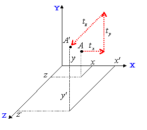

3.6.2 3D Transformation
In general, a matrix like the following is used for three-dimensional coordinate transformations:
The coordinate vector that specifies the vertex to be transformed is given as:
 :
:
before the transformation and as:
:
after the transformation.
During the transformation process three different variations of the conversion matrix are created to apply scaling information, movement translation information, and rotational information.
- Scaling matrix to specify enlargements or reductions
The matrix that holds the scaling information looks like this:
The expanded matrix calculation looks like this:
As you can see, each coordinate (x, y, and z) is given scaling information (sx, sy, and sz). Note that if a scaling factor is negative, it reverses the direction of the axis as it did with in the 2D scaling transformation.
Use the following N64 functions to apply scaling:
Obviously when you multiply a matrix where by any vector, the vector does not change at all. This type of matrix is called an identity matrix. The N64 function guMtxIdent is used as an example.
- Translation matrix to specify movement
The three-dimensional translation matrix looks like this:
The translation matrix is used to translate; it translates the coordinates of an object to move it to a new location. When you multiply this matrix by a vector and expand it, you get this result:
The translation factors move the specified vertex to a new location, as you can see here:

You can use the following N64 functions to translate an object's vertex to a new location:
- Rotation matrix to specify rotation around an axis of origin
Three-dimensional rotational conversion is more difficult than two-dimensional because there are an infinite number of possibilities for the axis of origin.
However, in most cases, you will specify the rotation of each coordinate axis by using the synthesis method instead of using arbitrary axis rotation (see section 3.6.4, Coordinate System Transformation).
X-axis rotation is specified by this matrix:
When you expand the multiplication of a vector with this matrix, each coordinate component becomes:
As you can see, the X component has not changed.
Y-axis rotation is specified by this matrix:
When you expand the multiplication of a vector with this matrix, each coordinate component becomes:
As you can see, the Y component has not changed.
Z-axis rotation is specified by this matrix:

When you expand the multiplication of a vector with this matrix, each coordinate component becomes:
As you can see, the Z component has not changed.
The following N64 functions provide for rotation:
Rotational Direction of Each Axis Rotation
As explained previously, N64 uses the right-handed coordinate system (see section 3.3.1, Right/Left Hand Co-ordinate System). In this system, the positive rotation of an axis is counter clockwise as you directly face the oncoming vector, so the positive direction of each coordinate axis rotation looks like this:
Nintendo® Confidential
Copyright © 1999
Nintendo of America Inc. All Rights Reserved
Nintendo and N64 are registered trademarks of Nintendo
Last Updated March, 1999